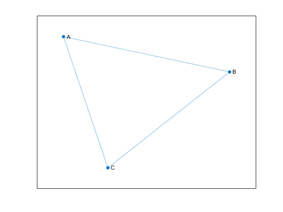
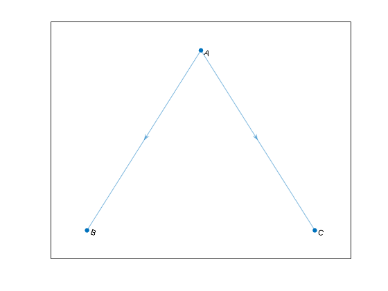
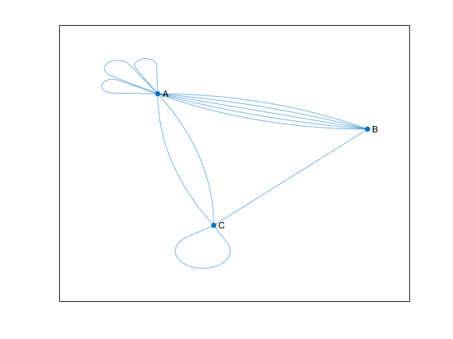
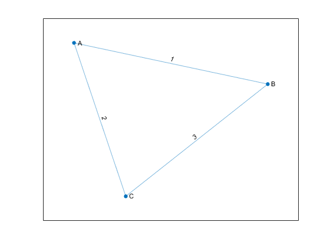

Directed and Undirected Graphs
What Is a Graph?
A graph is a collection of nodes and edges that represents relationships:
Nodes are vertices that correspond to objects.
Edges are the connections between objects.
The graph edges sometimes have Weights, which indicate the strength (or some other attribute) of each connection between the nodes.
These definitions are general, as the exact meaning of the nodes and edges in a graph depends on the specific application. For instance, you can model the friendships in a social network using a graph. The graph nodes are people, and the edges represent friendships. The natural correspondence of graphs to physical objects and situations means that you can use graphs to model a wide variety of systems. For example:
Web page linking — The graph nodes are web pages, and the edges represent hyperlinks between pages.
Airports — The graph nodes are airports, and the edges represent flights between airports.
In MATLAB®, the graph and digraph functions construct objects that represent undirected and
directed graphs.
Undirected graphs have edges that do not have a direction. The edges indicate a two-way relationship, in that each edge can be traversed in both directions. This figure shows a simple undirected graph with three nodes and three edges.

Directed graphs have edges with direction. The edges indicate a one-way relationship, in that each edge can only be traversed in a single direction. This figure shows a simple directed graph with three nodes and two edges.

The exact position, length, or orientation of the edges in a graph illustration typically do not have meaning. In other words, the same graph can be visualized in several different ways by rearranging the nodes and/or distorting the edges, as long as the underlying structure does not change.
Self-loops and Multigraphs
Graphs created using graph and
digraph can have one or more
self-loops, which are edges connecting a node to
itself. Additionally, graphs can have multiple edges with the same source and
target nodes, and the graph is then known as a multigraph.
A multigraph may or may not contain self-loops.
For the purposes of graph algorithm functions in MATLAB, a graph containing a node with a single self-loop is not a multigraph. However, if the graph contains a node with multiple self-loops, it is a multigraph.
For example, the following figure shows an undirected multigraph with self-loops. Node A has three self-loops, while node C has one. The graph contains these three conditions, any one of which makes it a multigraph.
Node A has three self-loops.
Nodes A and B have five edges between them.
Nodes A and C have two edges between them.

To determine whether a given graph is a multigraph, use the ismultigraph function.
Creating Graphs
The primary ways to create a graph include using an adjacency matrix or an edge list.
Adjacency Matrix
One way to represent the information in a graph is with a square adjacency matrix. The nonzero entries in an adjacency matrix indicate an edge between two nodes, and the value of the entry indicates the weight of the edge. The diagonal elements of an adjacency matrix are typically zero, but a nonzero diagonal element indicates a self-loop, or a node that is connected to itself by an edge.
When you use
graphto create an undirected graph, the adjacency matrix must be symmetric. In practice, the matrices are frequently triangular to avoid repetition. To construct an undirected graph using only the upper or lower triangle of the adjacency matrix, usegraph(A,'upper')orgraph(A,'lower').When you use
digraphto create a directed graph, the adjacency matrix does not need to be symmetric.For large graphs, the adjacency matrix contains many zeros and is typically a sparse matrix.
You cannot create a multigraph from an adjacency matrix.
For example, consider this undirected graph.

You can represent the graph with this adjacency matrix:
To construct the graph in MATLAB, input:
A = [0 1 2; 1 0 3; 2 3 0];
node_names = {'A','B','C'};
G = graph(A,node_names)G =
graph with properties:
Edges: [3×2 table]
Nodes: [3×1 table]You can use the graph or digraph functions to create
a graph using an adjacency matrix, or you can use the adjacency function to find the
weighted or unweighted sparse adjacency matrix of a preexisting graph.
Edge List
Another way to represent the information in a graph is by listing all of the edges.
For example, consider the same undirected graph.
Now represent the graph by the edge list
From the edge list it is easy to conclude that the graph has three unique nodes,
A, B, and C, which
are connected by the three listed edges. If the graph had disconnected nodes,
they would not be found in the edge list, and would have to be specified
separately.
In MATLAB, the list of edges is separated by column into source nodes and target nodes. For directed graphs the edge direction (from source to target) is important, but for undirected graphs the source and target node are interchangeable. One way to construct this graph using the edge list is to use separate inputs for the source nodes, target nodes, and edge weights:
source_nodes = {'A','A','B'};
target_nodes = {'B','C','C'};
edge_weights = [1 2 3];
G = graph(source_nodes, target_nodes, edge_weights);Both graph and digraph permit construction of a
simple graph or multigraph from an edge list. After constructing a graph,
G, you can look at the edges (and their properties) with
the command G.Edges. The order of the edges in
G.Edges is sorted by source node (first column) and
secondarily by target node (second column). For undirected graphs, the node with
the smaller index is listed as the source node, and the node with the larger
index is listed as the target node.
Since the underlying implementation of graph and
digraph depends on sparse matrices, many of the same
indexing costs apply. Using one of the previous methods to construct a graph all
at once from the triplet pairs (source,target,weight) is
quicker than creating an empty graph and iteratively adding more nodes and
edges. For best performance, minimize the number of calls to
graph, digraph,
addedge, addnode,
rmedge, and rmnode.
Graph Node IDs
By default, all of the nodes in a graph created using graph or
digraph are numbered. Therefore, you always can refer to
them by their numeric node index.
If the graph has node names (that is, G.Nodes contains
a variable Name), then you also can refer to the
nodes in a graph using their names. Thus, named nodes in a graph can
be referred to by either their node indices or node names. For example,
node 1 can be called, 'A'.
The term node ID encompasses both aspects of node identification. The node ID refers to both the node index and the node name.
For convenience, MATLAB remembers which type of node ID you use when you call most graph functions. So if you refer to the nodes in a graph by their node indices, most graph functions return a numeric answer that also refers to the nodes by their indices.
A = [0 1 1 0; 1 0 1 0; 1 1 0 1; 0 0 1 0];
G = graph(A,{'a','b','c','d'});
p = shortestpath(G,1,4)
p =
1 3 4
However, if you refer to the nodes by their names, then most graph functions return an answer that also refers to the nodes by their names (contained in a cell array of character vectors or string array).
p1 = shortestpath(G,'a','d')
p1 =
1×3 cell array
{'a'} {'c'} {'d'}Use findnode to find the numeric node ID
for a given node name. Conversely, for a given numeric node ID, index
into G.Nodes.Name to determine the corresponding
node name.
Modify or Query Existing Graph
After you construct a graph or digraph object, you can
use a variety of functions to modify the graph structure or to determine how many
nodes or edges the graph has. This table lists some available functions for
modifying or querying graph and digraph
objects.
addedge | Add one or more edges to a graph |
rmedge | Remove one or more edges from a graph |
addnode | Add one or more nodes to a graph |
rmnode | Remove one or more nodes from a graph |
findnode | Locate a specific node in a graph |
findedge | Locate a specific edge in a graph |
numnodes | Find the number of nodes in a graph |
numedges | Find the number of edges in a graph |
edgecount | Number of edges between specified nodes |
flipedge | Reverse the direction of directed graph edges |
reordernodes | Permute the order of the nodes in a graph |
subgraph | Extract subgraph |
See Modify Nodes and Edges of Existing Graph for some common graph modification examples.